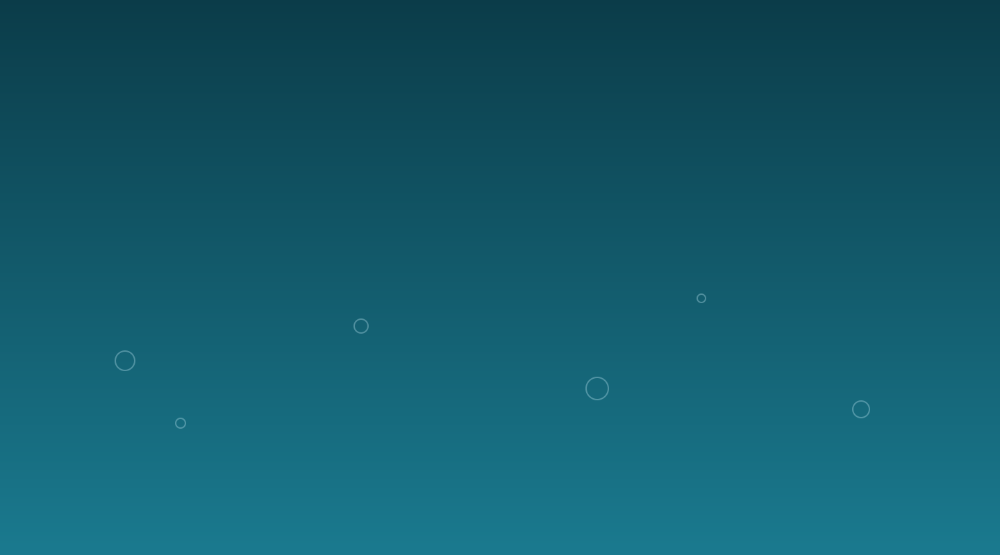

Tiny dirt
Clay and silt are so small they never sink on their own. They make water cloudy and can carry germs.

How do chemical processes make water safer to drink? Follow a glass of muddy river water through five steps and watch it change.
Start the journey
It looks fine from far away. Up close, it carries three kinds of trouble.
Clay and silt are so small they never sink on their own. They make water cloudy and can carry germs.
Bacteria, viruses and parasites can make people very ill. You cannot see them.
Some metals and chemicals mix into water completely. Treatment plants test for these and remove them.
Press each step. Brown dots are dirt. Green dots are germs.
Its positive charge cancels the negative charge on dirt, so the dirt stops pushing itself apart and starts sticking together.
These adjust the pH, how acidic the water is. Coagulation works best in a narrow pH range, and balanced water is gentler on pipes.
In water it forms hypochlorous acid, which breaks into germs and stops them working. A small amount stays behind to protect water in the pipes.
Ozone is a very reactive form of oxygen that destroys germs fast. It leaves no lasting taste, so plants often add a little chlorine after it.
Yes, when the plant is run well. Treatment is a series of safety nets: each step catches what the one before it missed.
Chemistry has a cost too. Chlorine can react with natural material to make by-products, so regulators set limits, and operators test the water many times a day. Always check your local water report for exact numbers.